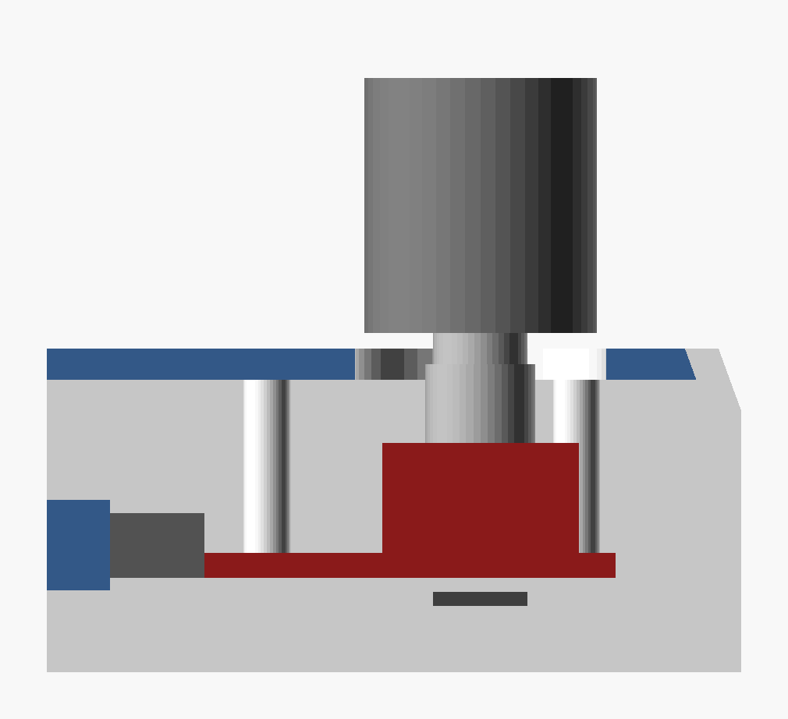
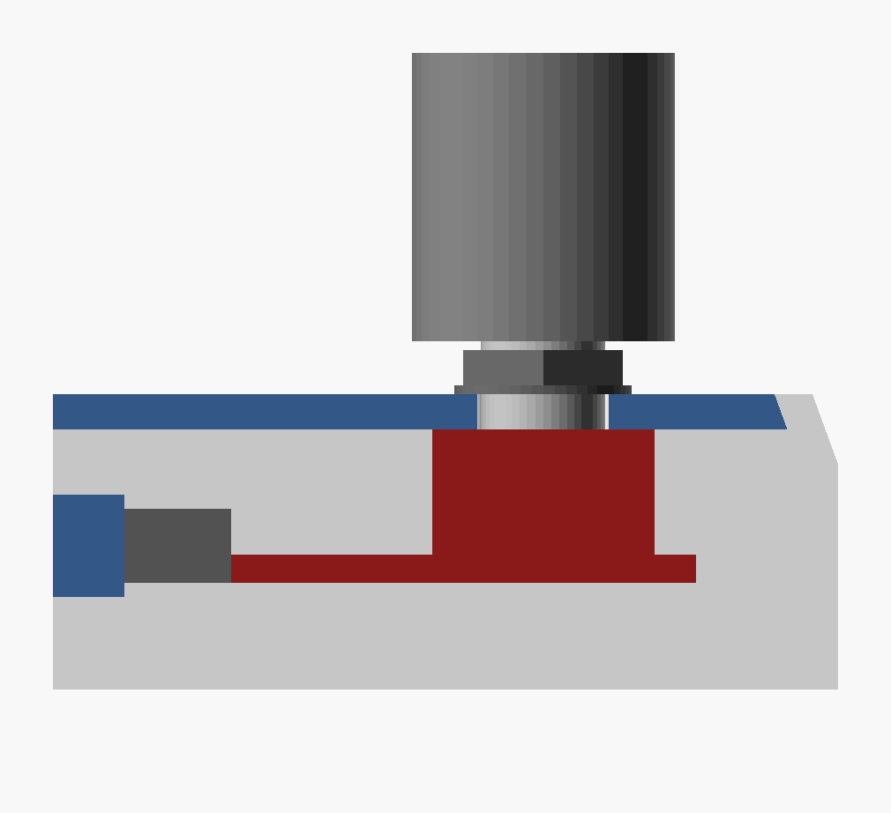

In v1 the knob board hangs on two snap hooks, and one of them doesn't catch. For v2 the plan is to bolt it to the top with the nut that came with the KY-040. These are the numbers I need to model that.

The board is pushed up against 4 posts and only the hooks keep it there. The shaft's position depends on where the hooks put the board.

The encoder's threaded collar goes up through a small hole and the nut holds it from outside. Nothing has to flex, and the hole centres the shaft. The sizes in this picture are guesses; the cards below replace them.
Pull the cap off first (if it has a small screw on its side, loosen that). Every side view shows the board flat, encoder on top, the pin end on the left. Every top view looks down on the encoder, pin end on the left.